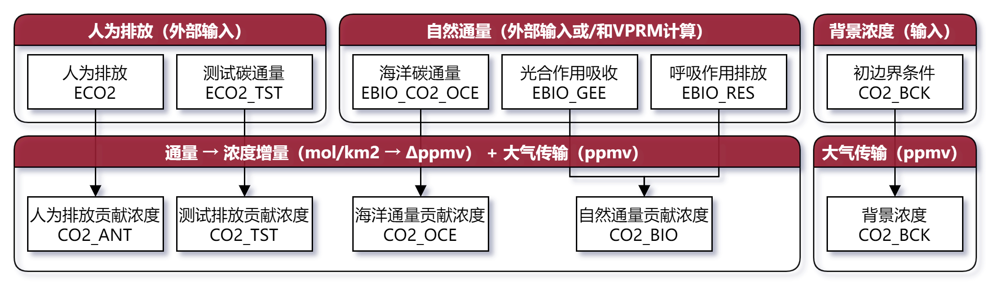
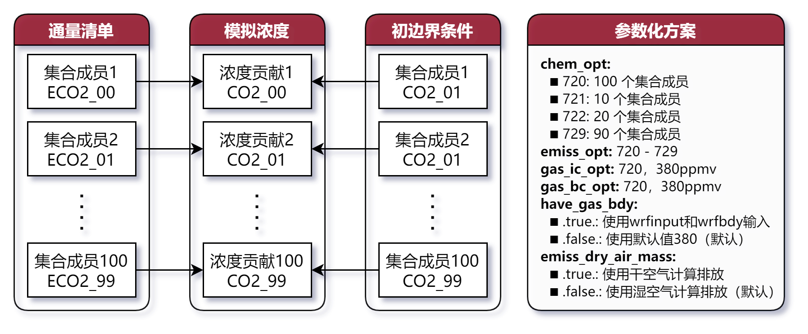
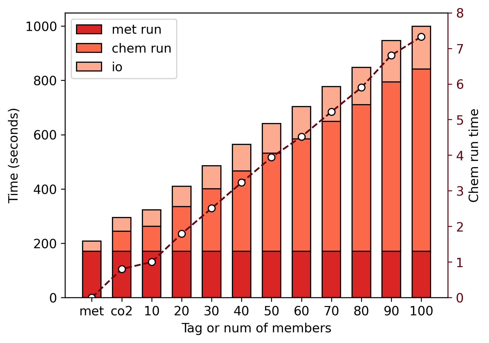

title: "WRFChem Ensemble CO<sub>2</sub>"
author: "周旭"
institude: "中国科学院大气物理研究所"
short_title: null
short_author: null
short_institude: null
other_char1: "1234567890"
other_char2: "abcdefghijklmnopqrstuvwxyzABCDEFGHIJKLMNOPQRSTUVWXYZ"
other_char3: "!@#$%^&*()_+~`-=[]{};':\",./<>?\\|"
WRFChem Ensemble CO2
模式介绍
目前 WRFChem 模式CO2方案
- 主要模式过程分为排放处理和大气传输两部分，并未考虑CO2的化学反应
- 计算得到的CO2不会影响大气物理化学性质，也不会影响传输过程
- 对于不同的排放/通量的处理过程是一致的（区别仅在于变量名）

wrfchem_co2
现有 WRFChem 模式的问题
- 集合模拟需求：
- 运行多个集合，重复的气象过程计算导致了大量计算资源的浪费
- 在集合计算中仅需要CO2_ANT一个变量，其他变量是不必要的
- 对于多种不同情景，例如区分某个城市的增量，需要重复计算气象过程
- 模式计算BUG：
运行测试
WRFChem 集合CO2模拟方案
- 增加了10个参数化方案，可分别模拟10-100个集合CO2
- 增加了控制排放计算使用干湿空气的选项
- 这些方案中不计算VPRM以及其他自然碳通量，全部依赖输入通量清单

wrfchem_en_co2
测试方案设计
- 网格设定
- 网格大小：105×105×44
- 网格距：9km
- 模拟区域：中国东南福建省周边
- 运行设定
- 气象、化学时间积分步长：36s
- 运行时间：18h
- 从重启文件开始运行
- 计算资源
- 对照 WRFChem CO2
设置：
运行效率评估
- 随着集合数目增加，运算耗时（包括IO和化学积分）线性增加
- 原始 WRFChem 的CO2耗时约为10集合成员时的0.8倍
- 适当增加化学时间积分步长可以减少运算时间（三清使用5m，为当前8.33倍）

time_compare